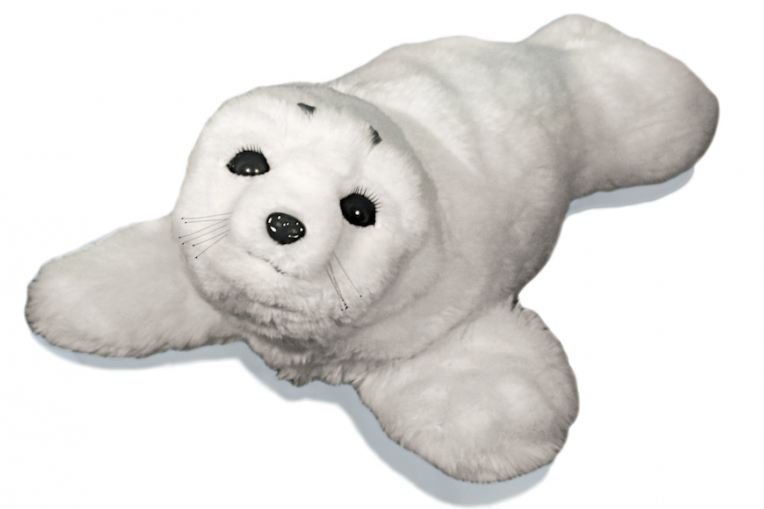
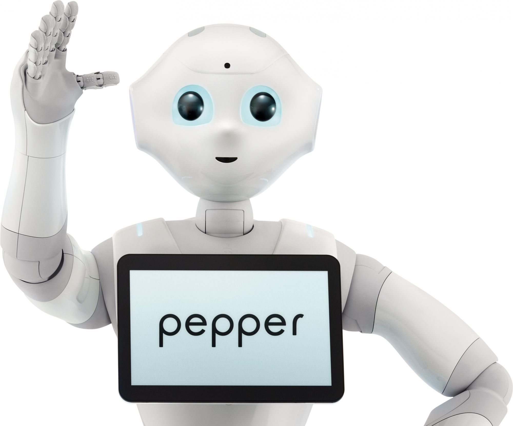
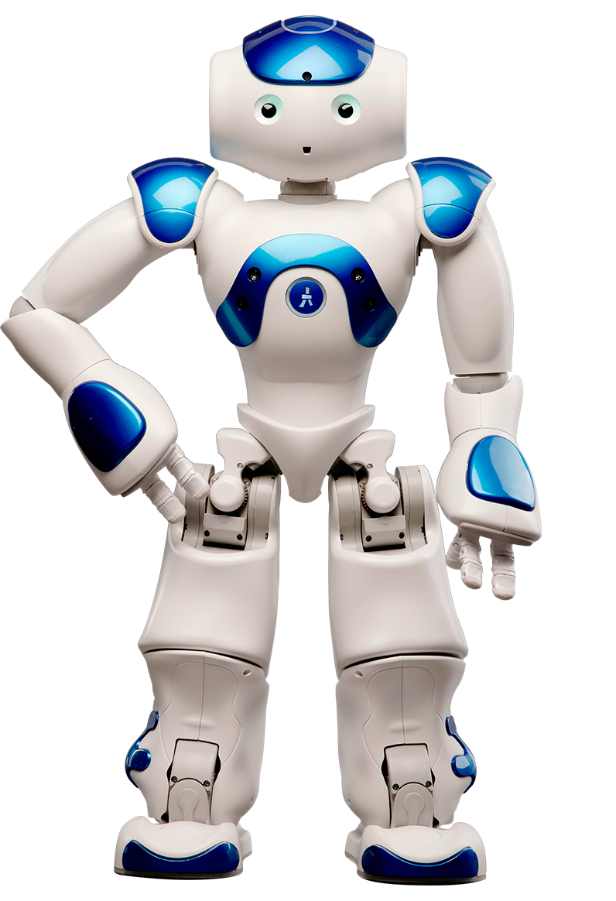
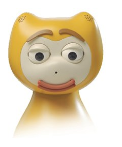
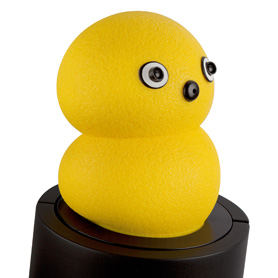
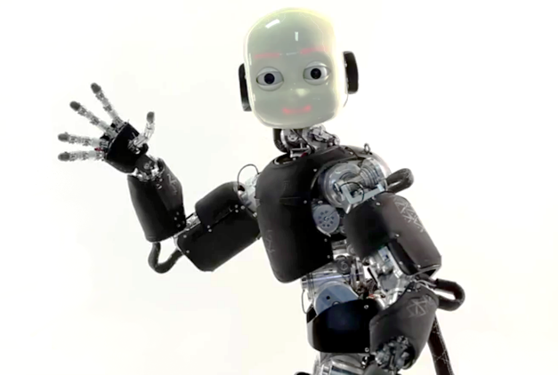

|  | Paro | PARO est un robot socio-pédagogique utilisé en atelier d’animation et en thérapie relationnelle individuelle pour les malades Alzheimer et maladies apparentées. Développé dès 1993, le phoque PARO a été tout d’abord commercialisé au Japon en 2005, puis aux Etats-Unis en 2009 où il a obtenu la Certification FDA en tant que robot thérapeutique. Les traits de cet animal (forme, fourrure, sons émis) inspirent confiance à travers une certaine innocence, alors que des animaux domestiques (type chien ou chat) peuvent pour certain être rattachés à des risques de griffures ou de morsures. | |
|---|---|---|---|
Pepper est un robot humanoïde, développé par la société française Aldebaran et le groupe japonais Softbank, capable de reconnaître et de reproduire certaines émotions. Pepper est dit être un robot émotionnel, car l'objectif est qu'il puisse avoir la réaction la plus appropriée pour une situation non définie. Le robot possède ainsi une variété de tons et de registres de langue qu'il va sélectionner en fonction de l'analyse du contexte et de son interlocuteur. La reconnaissance des émotions de l'interlocuteur est basée sur la détection des expressions faciales, du ton et du champ lexical employé. | Pepper |  | |
|  | Quelques exemples de robots sociaux | L’iCat est une plateforme robotique développée par Philips afin d’étudier l’interaction homme-robot (HRI). Parmi ses utilisations, nous pouvons trouver un iCat qui joue aux échecs avec un enfant (on étudie alors la coopération entre l’enfant et le robot), ou bien un iCat encourageant un enfant lors d’une partie d’échecs, décourageant de ce fait son adversaire. | |
| iCat | |||
| Nao |  | ||
NAO est un robot humanoïde français, autonome et programmable, développé par la société Aldebaran Robotics, une start-up française située à Paris. La palette des usages potentiels de NAO est très vaste, à condition de les programmer : on peut l'imaginer comme robot de compagnie, partenaire de jeu, garde-malade, objet communicant, élève-robot, etc. Toutefois, sa faible autonomie (90 min) est une limitation importante. | |||
Keepon est un petit robot jaune conçu pour produire un échange émotif et attentif avec un humain (en particulier avec un enfant) de la manière la plus simple et la plus complète. Keepon fut développé par Hideki Kozima de l'Institut national de technologie communicante (NICT) à Kyoto au Japon. Keepon a quatre moteurs, une peau en caoutchouc, deux caméras pour les yeux et un microphone dans son nez. Son apparence ressemble à celle d'un bonhomme de neige ou à celle d'une sorte de petit oiseau. | Keepon |  | |
|  | iCub | iCub est un petit robot humanoïde conçu par le consortium RobotCub en 2006, composé de plusieurs universités à travers toute l'Europe. C'est un projet ouvert à de nombreux égards : les plans et les spécifications du robot sont accessibles à tous, et tous les logiciels sont Open source. iCub mesure 104 cm, pour un poids de 22 kg. Cette taille est celle d'un enfant d'environ trois ans et demi. | |